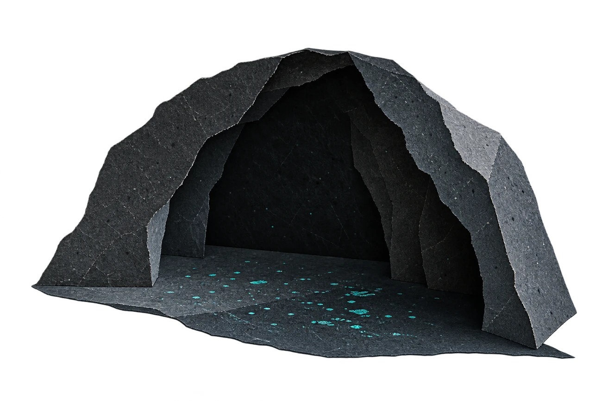
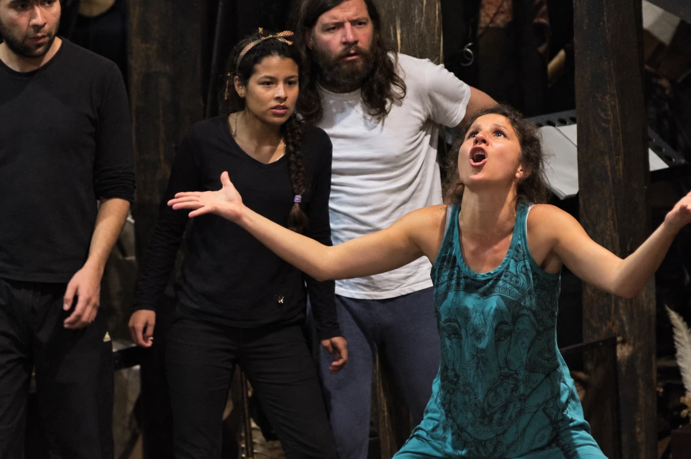
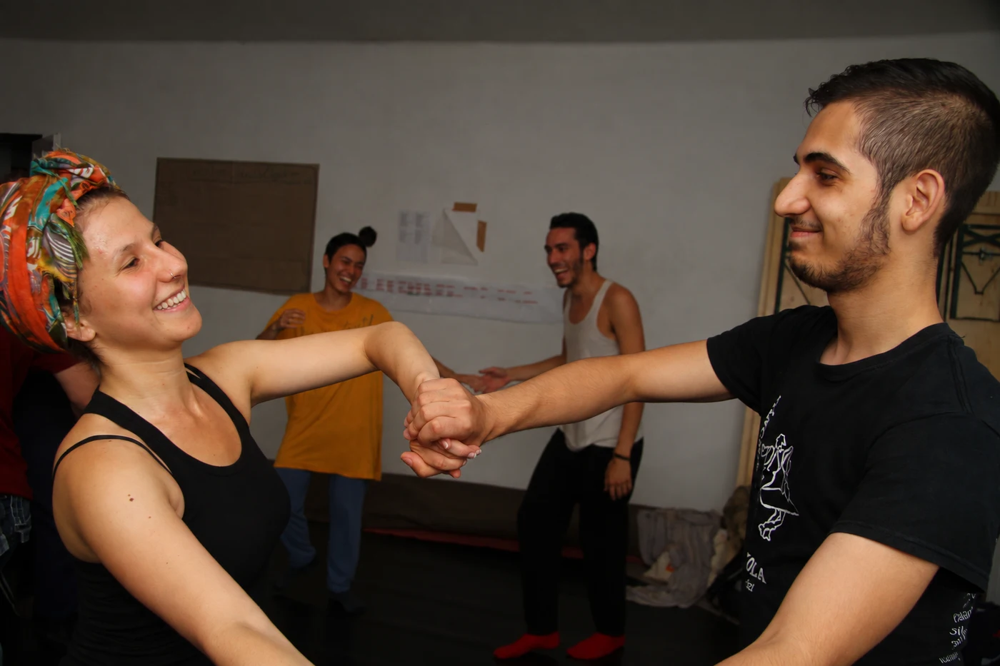

Una forma de entender la voz desde el cuerpo y la escucha.
La voz es cuerpo en relación: respiración, movimiento, sonido y escucha. Vozalvaje se acerca a ella desde la experiencia, atendiendo a cómo emerge, qué expresa y qué posibilidades abre en el encuentro con otras personas.

Escuchar desde el cuerpo
La integración de voz y movimiento permite acercarse al sonido desde la experiencia corporal. Respiración, postura, percepción e intención se entrelazan al hablar y al cantar. Escuchar esas relaciones es parte del trabajo: percibir el sonido y reconocer lo que sucede en el cuerpo cuando lo producimos.

Una voz propia, en relación
Explorar la voz es dar lugar a su singularidad. La práctica invita a probar matices, resonancias y formas de expresión, y a escuchar cómo se transforman al entrar en relación con el espacio y con otras voces. El canto, el movimiento y la palabra son maneras de recorrer esa experiencia.